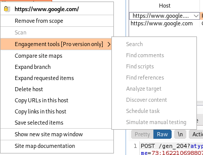

Engagement Tools (Pro version)
Engagement Tools (only available in the PRO version)
Search → Searches across all data seen by Burp
Analyze Target → Quick report of static and dynamic URLs and parameters previously seen in the target application
Discover Content → Complements crawling by trying to forcibly browse paths and resources based on wordlists